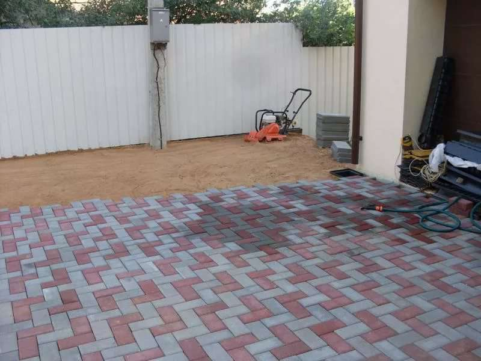

Этап 1: Разметка территории
Что нужно: колышки (деревянные или металлические), шнур или бечевка, рулетка, уровень (пузырьковый или лазерный).
- Определите границы дорожки или площадки.
- Вбейте колышки по углам.
- Натяните шнур между колышками.
- Проверьте диагонали — для прямоугольных участков они должны быть равны.
- Определите уклон: для водоотвода нужен перепад 1–2 см на 1 метр длины.
Этап 2: Подготовка основания
Шаг 1: Снятие грунта
- Снимите верхний слой грунта на глубину 20–30 см.
- Удалите корни растений, камни, мусор.
- Утрамбуйте дно траншеи.
Шаг 2: Дренажный слой
- Засыпьте щебень фракции 20–40 мм слоем 10–15 см.
- Разровняйте граблями и утрамбуйте виброплитой.
- Проложите геотекстиль (по желанию, но рекомендуется).
Шаг 3: Песчаный слой
- Засыпьте чистый песок (без глины!) слоем 10–15 см.
- Разровняйте правилом, пролейте водой, утрамбуйте.
Шаг 4: Цементно-песчаная смесь (ЦПС)
- Смесь: 1 часть цемента М400 на 3–4 части песка.
- Засыпьте слоем 3–5 см, разровняйте, но не утрамбовывайте — этот слой нужен для точной подгонки плитки.


Этап 3: Установка бордюров
Зачем нужны бордюры: фиксируют плитку, не давая ей «расползаться», создают чёткую границу, улучшают внешний вид.
- Выкопайте траншею под бордюр глубиной 15–20 см.
- Засыпьте песок слоем 5 см.
- Установите бордюр на нужный уровень.
- Зафиксируйте бетонным раствором с двух сторон.
- Дайте бетону схватиться (минимум 2–3 часа).
Этап 4: Укладка плитки
- От себя! Укладывайте плитку от бордюра, двигаясь вперёд, чтобы не ходить по подготовленному основанию.
- На сухую смесь: уложите первую плитку в угол, прижмите резиновой киянкой, проверьте уровень; зазор между плитками 1–2 мм.
- Рисунок: «Кирпичная кладка» (вразбежку) — самый простой и надёжный; «Ёлочка» — прочнее, но сложнее; «Круговой рисунок» — красиво, но много подрезки.
- Подрезка: болгаркой с алмазным диском по бетону.

Этап 5: Заполнение швов
Зачем: швы фиксируют плитку и предотвращают попадание воды под основание.
- Приготовьте сухую ЦПС (1:3) или используйте готовый кварцевый песок.
- Рассыпьте смесь по плитке.
- Прометите щёткой, заполняя все швы.
- Пролейте водой из лейки (не сильной струёй!).
- Повторите 2–3 раза до полного заполнения.

Этап 6: Финальная утрамбовка
Инструмент: виброплита с резиновой накладкой (чтобы не повредить плитку).
- Пройдитесь виброплитой по всей поверхности, двигаясь от краёв к центру.
- После утрамбовки ещё раз заполните швы.
Ошибки, которых нужно избегать
- Экономия на основании — тонкий слой щебня или песка приведёт к просадке.
- Отсутствие уклона — вода будет стоять лужами.
- Плохое уплотнение — плитка «заиграет» после первой зимы.
- Укладка на глинистый грунт — глина пучится при замерзании и поднимает плитку.
- Отсутствие бордюров — плитка «расползётся» за 1–2 сезона.
Сколько времени занимает укладка?
- Подготовка основания: 1–2 дня (зависит от площади).
- Установка бордюров: 0,5–1 день.
- Укладка плитки: 1–3 дня.
- Заполнение швов и утрамбовка: 0,5 дня.
Когда лучше укладывать плитку?
Оптимальное время: весна — апрель–июнь (после схода снега, когда грунт просохнет); осень — сентябрь–октябрь (до заморозков). Температура: от +5 °C до +25 °C.
Не рекомендуется: зимой (грунт промерзает), в дождь (вода размывает основание), в сильную жару (быстро испаряется влага из ЦПС).
Уложить без ошибок — с гарантией 5 лет
Профессиональная бригада уложит плитку в 3–4 раза быстрее и с гарантией качества. Бесплатный замер и консультация — по телефону.
Позвонить: +7 (900) 000-00-00